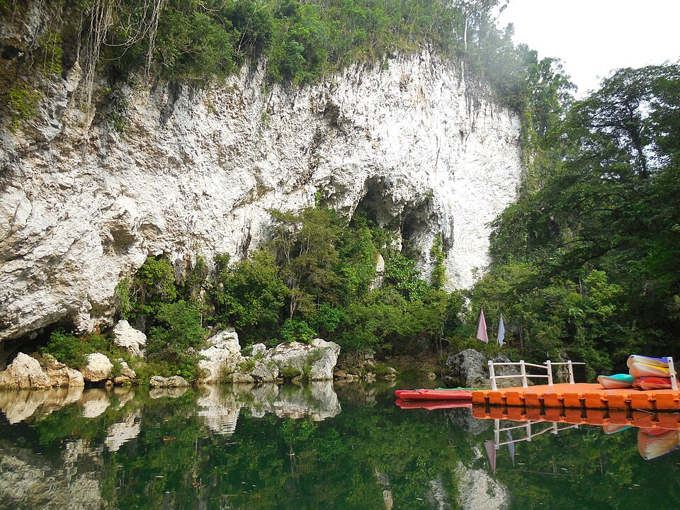
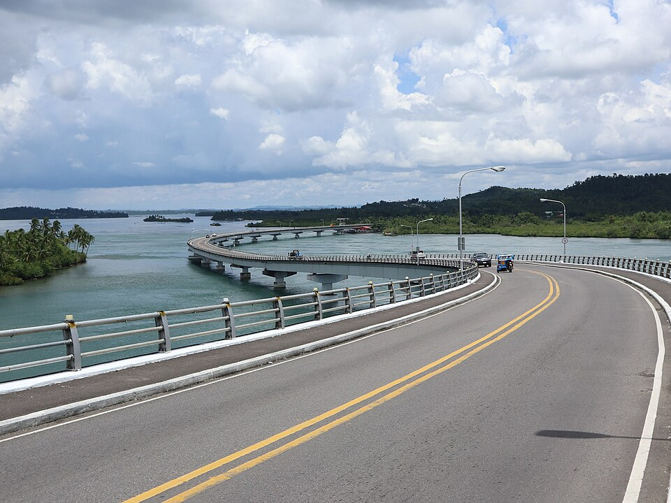

Where the islands slow the day down.
A coastal region of bridge crossings, quiet coves, lively traditions, and places that make an ordinary weekend feel much longer.
Explore destinationsThere is more than one way to follow the coast.
Travel from Leyte to Samar across San Juanico Bridge, take a boat through Sohoton's limestone passages, or follow the water toward Kalanggaman's long white sandbar. Every route changes the view a little.
See the experiences

Six provinces, shaped by sea, memory, and movement.
Eastern Visayas brings together Biliran, Eastern Samar, Leyte, Northern Samar, Samar, and Southern Leyte. Its identity lives in Pacific shorelines, woven traditions, familiar food, historic landmarks, and the people who continue to care for each place.
The region does not need a rushed checklist. It is better explored one crossing, meal, conversation, and shoreline at a time.
Read the stories behind the viewThe coast, collected.
Six places that show how different one region can feel from day to day.